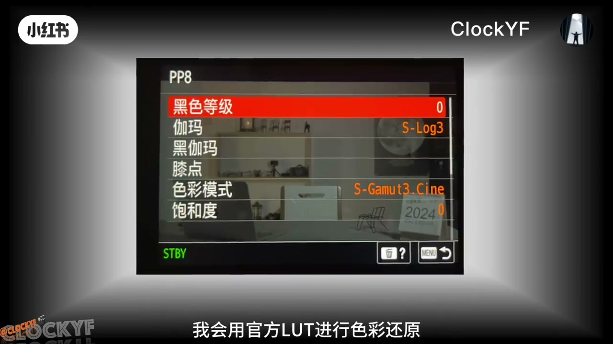
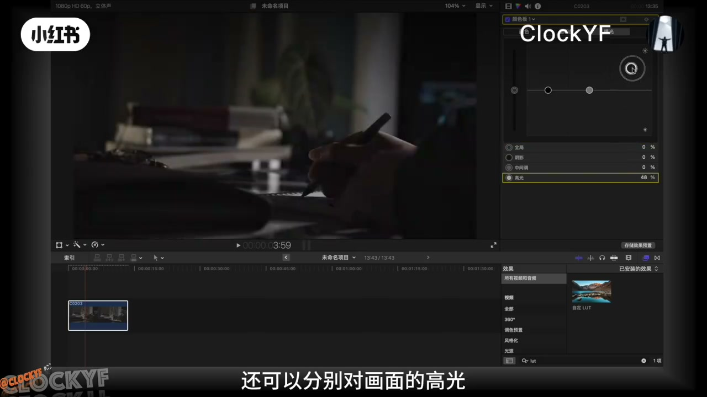
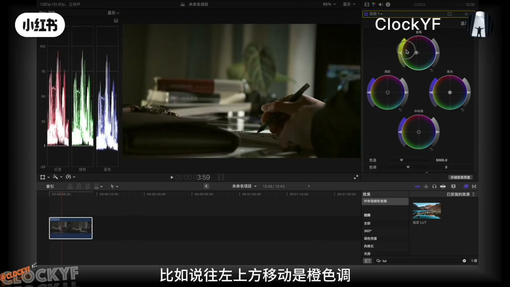
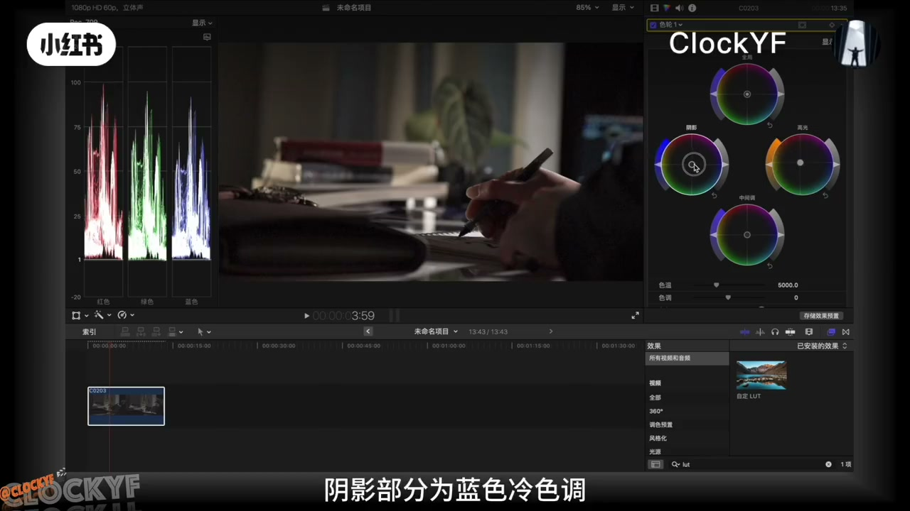
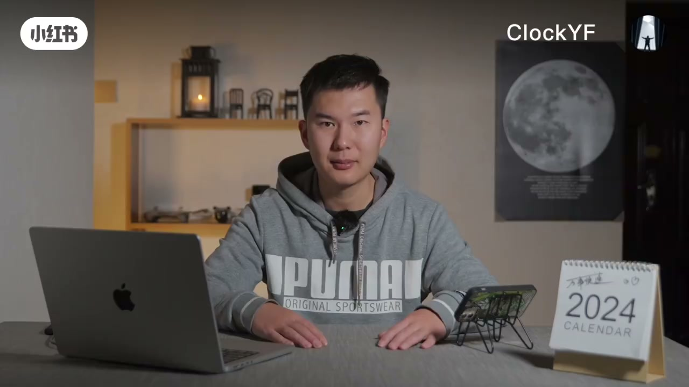

内容要点
一芳（ClockYF）面向零基础把 Final Cut 调色收成一条可跟做的链路：Sony PP8／S-Log3 灰片先套官方还原 LUT→进二级调色前先把曝光分层做对（高光别过 100、阴影别低于 1，开波形）→再用色轮做高光偏暖、阴影偏冷，中调定风格。新手不必一上来追曲线，先把明暗对比和冷暖对比练出层次；色相饱和度曲线留作下期。全文按繁体口播转写后统一为简体表述。
知识结构
效果里套官方还原 LUT，先把灰片拉回。
颜色板分层调曝光；高光≤100、阴影≥1，看波形。
高光暖、阴影冷；中调定冷暖风格；新手先练双对比。
看前后层次变化；预告曲线精细调。
Final Cut 零基础调色口令：先 LUT 还原，再曝光分层到位，最后色轮冷暖分层——颜色会跟着正确曝光「去该去的位置」。
00:00-00:52第一步：官方 LUT 色彩还原
开场自称一芳：很多同学要看 Final Cut 调色，本期直接给她的流程。素材是 Sony 图片配置 PP8 拍的 S-Log3 灰片，所以第一步用官方 LUT 还原。
点效果→搜 LUT→双击选自定义 LUT。不知道下载地址的按片中步骤自行找。00:28 面板是证据。

00:52-01:39二级调色前：曝光分层必须先对
进二级前最重要的是调曝光——「只有正确的曝光，颜色才会去它该去的位置」。颜色检查器→颜色板：可调颜色、饱和度、曝光，且全局／高光／中间调／阴影可分层。
打开视频观测仪看波形。常规：高光拉到接近 100 不超过，阴影到约 1 不低于，中间调看风格。调完明暗对比更明显。01:10 高光约 48% 的操作帧可指认。

01:39-03:03色轮：高光暖、阴影冷，新手先练双对比
色轮同样可对全局／高光／中调／阴影动手：中心钮在色轮上偏左上偏橙暖、右下偏蓝冷，再叠加饱和与亮度。分析当前片：已有明暗，但整体太冷，而现场灯光偏暖——于是高光拉向橙、阴影偏向蓝，冷暖对比出层次；中调决定偏冷还是偏暖风格。
给新手建议：别一上来追求复杂，先用明暗对比＋冷暖对比练层次。另可后续用颜色曲线、色相饱和度曲线做更细。02:00／02:30 对应色轮与建议。


03:03-03:23回顾变化，流程给你参考
片尾回放步骤后的前后差异，欢迎留言交流。03:15 成片观感收束。

完整转录（69段）
以下文本由 Whisper medium 模型自动转录，可能存在少量识别误差，已尽可能修正。
Final Cut 启动
Hello 大家好 我是一芳
因为很多同学想要看 Final Cut 调色
那本期视频我会分享自己的调色流程
不会调色的同学赶快收藏起来
好 话不多说
我们直接进入到操作介面
好 因为我是用 Sony 图片配置 PP8 拍摄的 S-Log 3 灰片
所以第一步我会用官方 LUT 进行色彩还原
点击效果按钮
输入 LUT
直接双击
就可以选择自建一 LUT
那不知道官方还原 LUT 下载地址的同学
可以按以下步骤进行下载
好 那进入到二级调色前
有一个非常重要的步骤
那就是调整曝光
因为只有正确的曝光颜色才会去它该去的位置
那我们来看看怎么样来操作
我们点击颜色检查器按钮
选择颜色版
可以看到能对颜色、饱和度、曝光进行调整
而且除了全局
还可以分别对画面的高光、中间调、阴影进行分层调
接著我们可以打开视频观测仪
可以看到画面调整时候的波形图
有利于调整时候的数字参考 非常好用
那正常来讲把高光拉到100
不超过100
阴影拉到1 不低于1
中间调的话看个人的风格需求
可以看到曝光调整后
画面的明暗对比更为明显
更有层次
好 接下来会通过色轮进行色彩的调整
给大家详细介绍下这个介面
首先可以看到这个工具依旧可以对画面的四个部分
全局、高光、中间调、阴影进行调整
调中间的按钮可以在色轮上进行色调的调整
比如说往左上方移动是橙色调、拼暖色
右下方移动是蓝色调、拼冷色
调整色调之后还可以在此基础上进行饱和度
亮度的再次调整
好 那了解功能之后我们来对这个画面进行分析
现在画面的曝光已经有明暗对比了
但色调整体太冷
但是看到云拼的灯光打的是暖光
那我们可以调整高光部分到橙色暖色调
阴影部分为蓝色冷色调
增加画面的冷暖对比更有层次
最后通过中间调来决定你的画面风格是拼冷还是拼暖
那这里也有一个建议
如果你是新手可以不用追求复杂
可以先以增加画面明暗对比和冷暖对比来练习
增加画面的层次感
当然除了今天所介绍的银色板受冷外
还可以以银色曲线、色相饱和度曲线
这两个功能来进行更为精细的调色
如以时间过长记得关注我
下期进行分享
好 那最后我们来回顾一下
经过本期这些步骤
画面发生了怎样的变化
好 这个调色流程希望给你参考
也欢迎评论区留言交流
记得关注我
我是一芳带你学更多摄影钢货
我们下期再见 拜拜